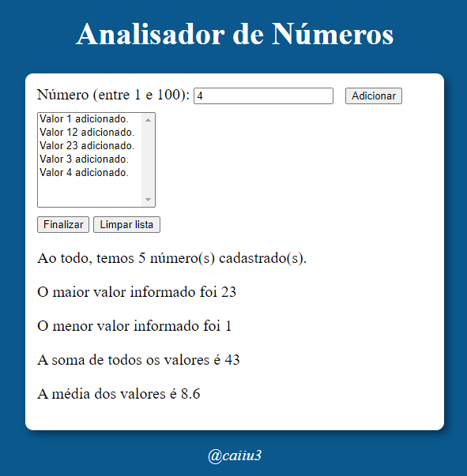

Meu repositório no GitHub
Meu repositório no GitHub

Bom, pra começar, sou um estudante no ensino médio, que decidiu entrar gradativamente no mundo da programação. Fiz
isso por conta de um longo interesse por tecnologia que já vinha cultivando há anos. Outra razão definitiva para
a minha entrada no ramo de tecnologia foi a indecisão sobre qual carreira seguir. Durante toda a minha vida,
sempre prensei que fosse acabar seguindo por uma área de exatas. Entretanto, talvez devido a alguns professores
ruins, eu perdi esse interesse por números e lógica e me voltei à matérias mais humanas, tais como direito,
economia ou algo similar. Entretanto, graças ao deus da tecnologia, tive contato com algumas pessoas maravilhosas
como o Filipe Deschamps e o Gustavo Guanabara. Esses dois foram mais do que responsáveis por me trazer para esse
mundo, e serei eternamente grato. Também é por conta deles que eu decidi seguir na área profissional da programação,
tentando diariamente me tornar um desenvolvedor full-stack. Normalmente, essa informação vem primeiro mas,
como eu esqueci de dizer antes, o meu nome é Caio.
Por último, estou me formando academicamente no Instituto Federal de Educação, Ciência e Tecnologia da Bahia.
Meu repositório no GitHub
 Meu perfil no Instagram
Meu perfil no Instagram
 Meu perfil no Twitter
Meu perfil no Twitter
 Meu perfil no Linkedin
Meu perfil no Linkedin
Alguns desses projetos foram desenvolvidos durante cursos, e outros como projetos pessoais. Todos os códigos-fonte podem ser acessados no meu perfil do GitHub.
Um projeto desenvolvido durante o curso de JavaScript na plataforma Curso Em Vídeo
Acesse este site aqui
O código-fonte está disponível neste repositório
Outro projeto desenvolvido durante o curso de JavaScript na plataforma Curso Em Vídeo
Acesse este site aqui
O código-fonte está disponível neste repositório
Também outro projeto feito durante o curso de JavaScript na plataforma Curso Em Vídeo
Acesse este site aqui
O código-fonte está disponível neste repositório
Este é um script que reproduz uma calculadora em um terminal rodando a linguagem Python. Foi feito como um projeto pessoal.
O código-fonte está disponível neste repositório